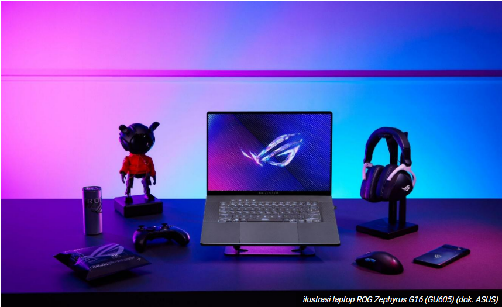

Artikel
ROG Zephyrus G16

Tanggal: 2024-03-18
Kategori: Teknologi
ROG Zephyrus G16 (GU605) digadang sebagai pelopor thin and light AI gaming laptop.
ASUS mengklaim bahwa tidak ada laptop gaming dengan layar 16-inci di dunia yang memiliki desain setipis dan seringan ROG Zephyrus G16 (GU605).
Laptop ini memiliki bobot seberat 1,85 Kg dan ketebalan sekitar 1,49 cm.
ROG Zephyrus G16 dijalankan oleh prosesor Intel® Core™ Ultra Series yang dilengkapi dengan NPU Intel® AI Boost.
Ini dirancang untuk meningkatkan kecepatan pemrosesan AI.
Baca Selengkapnya
Lukisan Ikonik Prancis 'Liberty' di Museum Louvre
Tanggal: 2023-09-24
Kategori: Seni
Museum Louvre di kota Paris sudah memulai proses restorasi untuk salah satu lukisan ikoniknya yaitu "Liberty" karya Eugene Delacroix.
Baca Selengkapnya
Bintang Paris Saint-Germain Kylian Mbappe 'Goda' Penggemar Real Madrid Soal Rumor Transfernya
Tanggal: 2024-03-26
Kategori: Olahraga
Kylian Mbappe tampaknya siap menyelesaikan kepindahannya ke ibu kota Spanyol dari Paris Saint-Germain di musim panas. Namun dengan transfer yang belum diumumkan secara resmi, spekulasi dan pertanyaan dari wartawan akan terus berlanjut. Tampaknya Mbappe telah memikirkan cara yang lebih kreatif untuk mengatasi pertanyaan tersebut, sebagaimana dibuktikan dalam konferensi pers hari Senin.
Dengan kepindahannya ke Madrid yang sudah dinantikan, wajar jika sebagian penggemar Prancis merasa marah terhadap pemainnya sendiri, terutama jika dibujuk oleh PSG. Mbappe mengakui dia memperkirakan akan ada kekesalan dari penonton – tetapi bukan karena mereka sedih melihatnya pergi. Sebaliknya, Les Bleus akan menghadapi Chile di Orange Velodrome Marseille - hanya beberapa hari sebelum pertandingan PSG melawan rival berat mereka.
Baca Selengkapnya